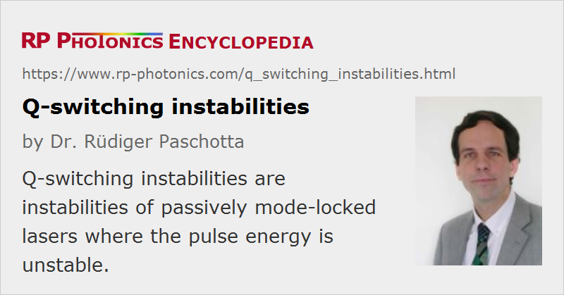

Q-switching Instabilities
Definition: instabilities of passively mode-locked lasers where the pulse energy is unstable
German: Q-Switching-Instabilitäten, Instabilitäten beim Güteschalten
Categories: fluctuations and noise, light pulses
How to cite the article; suggest additional literature
Author: Dr. Rüdiger Paschotta
When a laser (particularly a solid-state laser) is passively mode locked with a saturable absorber, it can exhibit so-called Q-switching instabilities. In some cases, Q-switched mode locking can lead to the regular emission of bunches of pulses with fairly stable parameters, but in other cases there are substantial fluctuations of the pulse parameters. Typically, rather unstable behavior is obtained when the parameters are chosen such that the bunch period becomes long and the pulse energy can become extremely low between the pulse bunches. In that case, the pulses in each bunch are essentially generated starting from spontaneous emission, and the pulse parameters cannot reach a steady state, because a bunch corresponds only to a few resonator round trips.
The article on Q-switched mode locking discusses possible measures for suppressing Q-switching instabilities, i.e., for obtaining stable continuous-wave mode locking with a constant pulse energy. In certain parameter regions, e.g. ultrahigh pulse repetition rates or high output power, this can be difficult or at least require compromises e.g. concerning the pulse duration.
Note that there are other types of instabilities of mode-locked lasers, which are not easily distinguished from Q-switching instabilities in experiments, but have a definitely different origin (e.g. a too long recovery time of the saturable absorber) and accordingly need different methods to be suppressed.
Questions and Comments from Users
Here you can submit questions and comments. As far as they get accepted by the author, they will appear above this paragraph together with the author’s answer. The author will decide on acceptance based on certain criteria. Essentially, the issue must be of sufficiently broad interest.
Please do not enter personal data here; we would otherwise delete it soon. (See also our privacy declaration.) If you wish to receive personal feedback or consultancy from the author, please contact him e.g. via e-mail.
By submitting the information, you give your consent to the potential publication of your inputs on our website according to our rules. (If you later retract your consent, we will delete those inputs.) As your inputs are first reviewed by the author, they may be published with some delay.
Bibliography
| [1] | H. Haus, “Parameter ranges for CW passive mode locking”, IEEE J. Quantum Electron. 12 (3), 169 (1976), doi:10.1109/JQE.1976.1069112 |
| [2] | F. X. Kärtner et al., “Control of solid-state laser dynamics by semiconductor devices”, Opt. Eng. 34, 2024 (1995), doi:10.1117/12.204794 |
| [3] | C. Hönninger et al., “Q-switching stability limits of cw passive mode locking”, J. Opt. Soc. Am. B 16 (1), 46 (1999), doi:10.1364/JOSAB.16.000046 |
| [4] | T. R. Schibli et al., “Suppression of Q-switched mode locking and breakup into multiple pulses by inverse saturable absorption”, Appl. Phys. B 70, 41 (2000), doi:10.1007/s003400000331 |
See also: Q-switched mode locking, passive mode locking, Q switching, relaxation oscillations
and other articles in the categories fluctuations and noise, light pulses
|  |
If you like this page, please share the link with your friends and colleagues, e.g. via social media:
These sharing buttons are implemented in a privacy-friendly way!